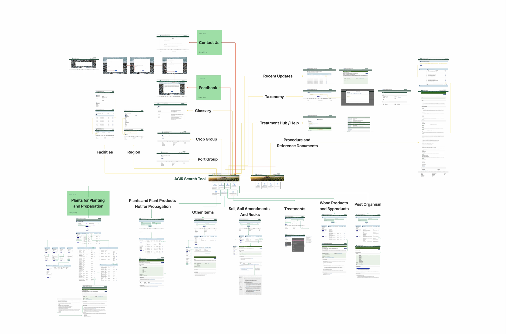
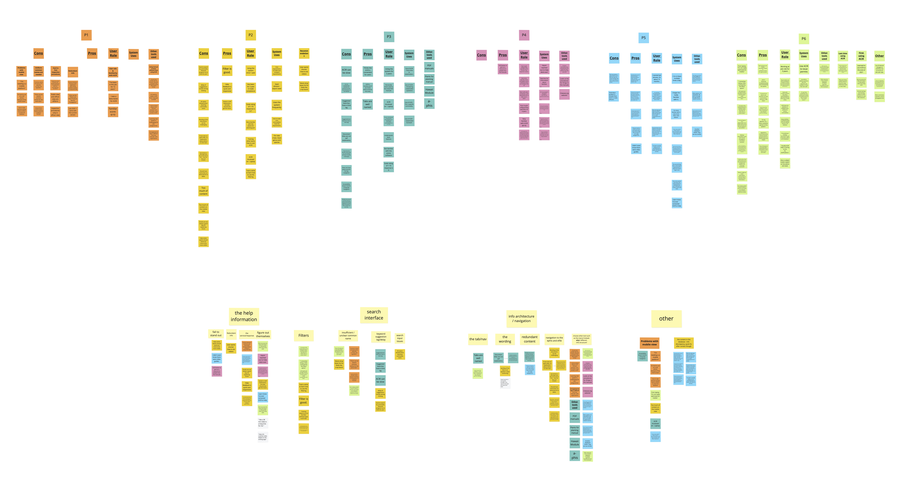
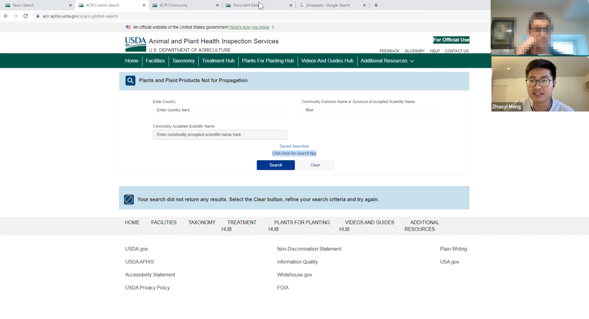

U.S. Department of Agriculture Usability Test of ACIR
UX Research & Consulting Project 2023 Winter
Context
In 2022, The U.S. Department of Agriculture developed a database named “Agricultural Commodity Import Requirements” (ACIR), providing a single source to search for and retrieve entry requirements for imported commodities. Users can check ACIR to see if importing a certain commodity need a permit.
Being the replacement for the manuals, ACIR has been doing a great job saving users' time. Users no longer have to figure out how to use the index of a long book, all they need to do is a simple search. However, the user experience of ACIR needs to be improved, as some users are still asking for orientation and training or simply turning back to the old manuals.
Therefore, we participated in the development of ACIR beginning 2023 as a usability team, aiming to fix the existed bugs and imperfect design and make the search experience more intuitive.
Process
Interaction Map
The first thing we did was to get familiar with the system. In addition to internet research and getting information directly from our client, we tested every feature / page on the site ourselves and generated this interaction map. This might not be a deliverable for our client, but this did ensure our familiarity with the product.

Interview
2 interviews with our client helped us determine the scope and priority of the project.
And 5 interviews with the users were conducted to understand their current attitude, need, and pain point.
At this stage, we are not already doing the usability test. What we were focusing on are the behavior, attitude, and aptitude of the users and the technical, business, and environmental context behind these.
After synthesizing all the qualitative data we collected through interview, I was able to generate an affinity wall that clustered related information together to give us some clues about the users need and pain points.

Comparative Evaluation
ACIR is a unique tool provided by the government, but we still managed to find four “competitors” to compare its strengths and weaknesses with to come up with recommendation for improvement.
For example, we chose AIRS (Canadian version of ACIR) to learn how they guide user and arrange search process, and FSIS's import library for the information organization of search result. The manual, as the old way of doing things was also selected to better understand what ACIR is built on and what improvement it has brought.
Though we do have priority and target when we are comparing ACIR with different platform, a set of criteria was created to uniform the comparing process and findings. According to the major issues we found from early research, we classified our comparing goal into 4 classes
Heuristic Evaluation
Our team employed Nielsen's hueristics to assess the system's usability, questions for each Heuristic are tailored depending on our research goal and relevance with ACIR. After individual evaluations were conducted by each team member, we aggregate and synthesize individual evaluation to generate the outcome for each issue and its severity.
Usability Test
We conducted 6 usability tests with current users to observe real user experience with ACIR.

Being able to develop test tasks based on all we have gained from former research, we quickly defined the goals of each task, reflecting serious issues of the system and our clients need. Then, each task was elaborated into simple and understandable sentences for better “UX”.
During the test, we put an emphasis making the user comfortable, telling them “It's the system's fault if you stuck somewhere”. We also managed to keep the interview process flexible by being familiar with the system and keeping task goal in mind so that even when the user accidentally got into unexpected situation, we were able to give appropriate hint to accomplish our test goal without directly tell them what to do.
What I Learned
Research and evaluation before actual usability test is necessary for the success of task design and test implementation.
The design of each usability task requires deep knowledge of the product and continuous iteration, and clear objectives for testing.
The quantity of usability test is less important than the quality of it.
Even though mostly we sit back and observe when conducting usability test, a good facilitator should learn when to be proactive to keep the user on track and accomplish the test goal flexibly.